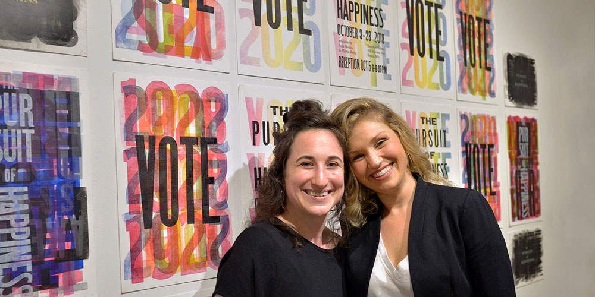
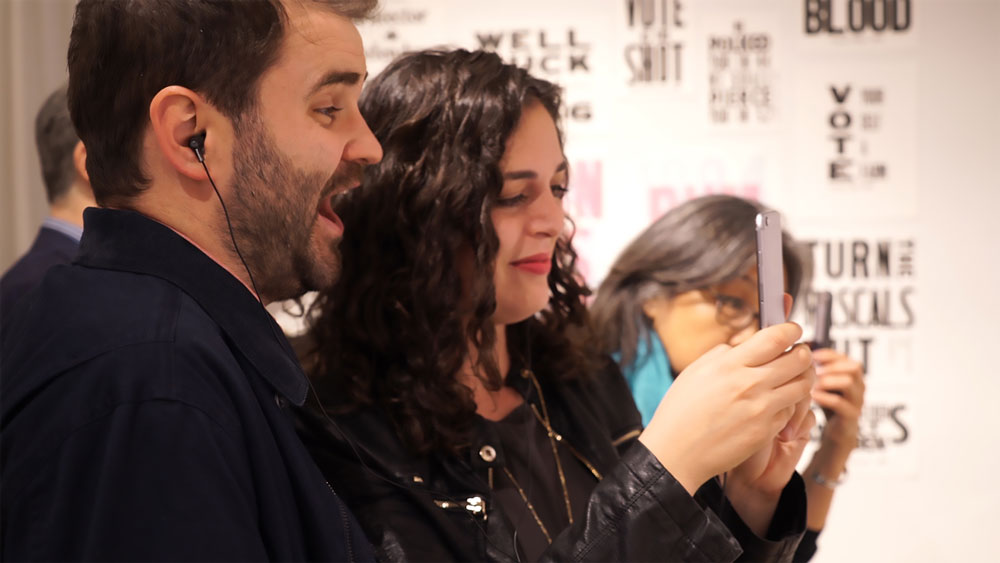
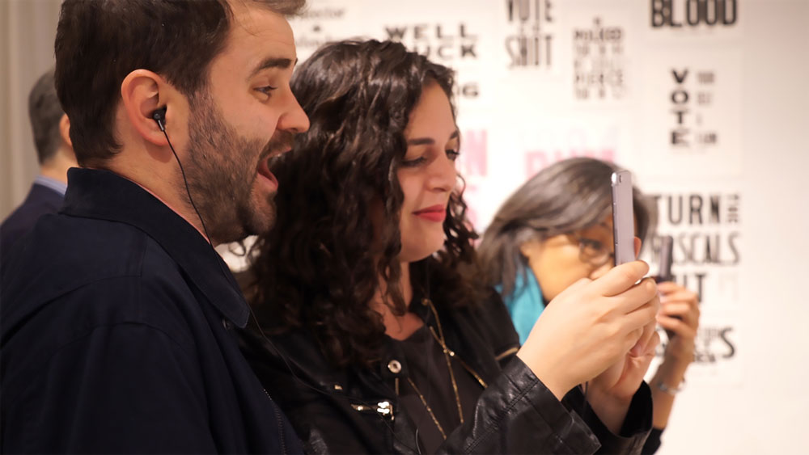

MassArt's Spring 2019 interdisciplinary elective, Disobedient Design, created a collaborative, augmented reality art workshop for MassArt’s Climate Resilience Forum about the effects of pollution in our underwater ecosystems.
Students took on the issue of recycling, asking the public to rethink the popular slogan: reuse, reduce, recycle; they created letterpress posters to be displayed during the workshop and original 3D trash assets for an web-based augmented reality ocean scene.
Letterpress Posters
Students displayed letterpress posters they created for the workshop with original slogans and textures made
 



The Workshop
Participants were asked to create original artwork that would become the skins of the 3D trash objects the students had built.


See the art-covered trash in our augmented reality ocean environmentHere
More information about the Climate Resilience Forum Here